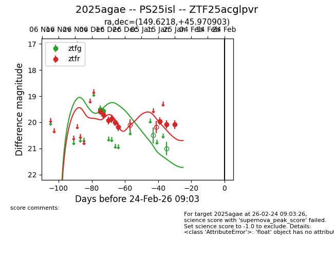
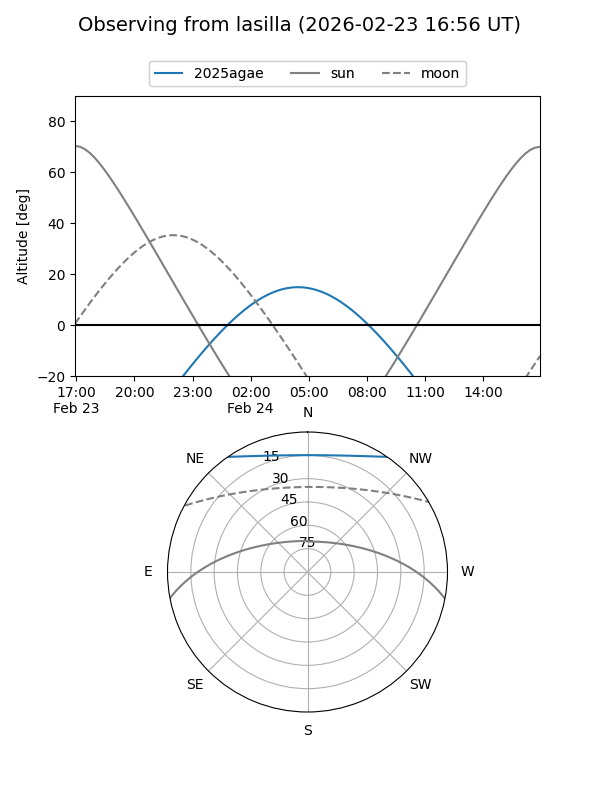
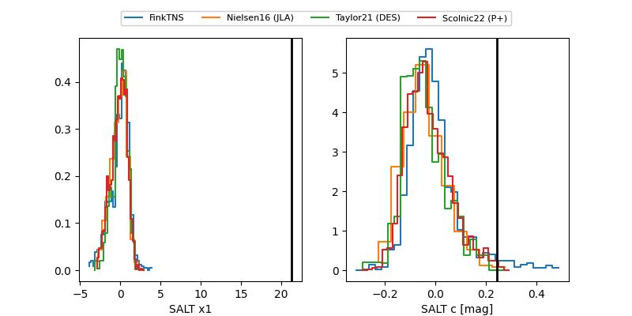

2025agae
Target 2025agae at 2026-01-25 09:11
Aliases and brokers:
FINK: link
Lasair: link
ALeRCE: link
TNS: link
YSE: link
alt names
ZTF25acglpvr (ztf,fink_ztf)
2025agae (tns,yse)
PS25isl (panstarrs)
Coordinates:
equatorial (ra, dec) = 149.6218,+45.97090
equatorial (HMS+DMS) = 09:58:29.23,+45:58:15.25
galactic (l, b) = (172.2673,+51.12167)
Flags:
Photometry:
last ztfg=19.58, ztfr=20.08
2 ztfg, 9 ztfr detections
Lightcurve

Visibility


Additional plots
